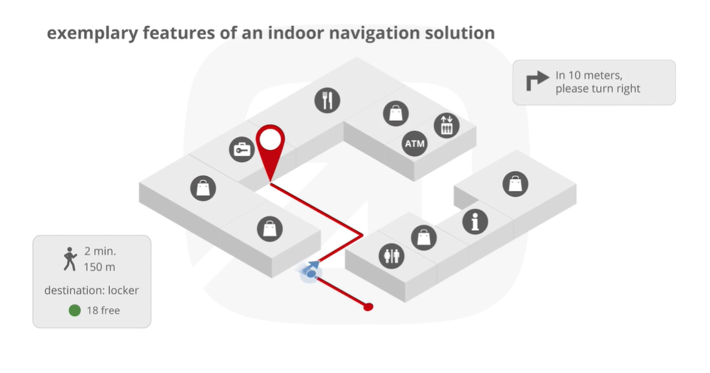

Welcome to PathFinder
This is an App (Android Phone or Tablet), that allows a user to find their way around supported buildings and / or areas, so if a user entered into a building such as LIT they could download the app and instantly have access an interactive map of LIT which has the ability to display all room names, number and specific information about those rooms such as timetables etc.
This example gives an idea of what our app will be able to do such as display different room locations on a map and a path that the user can follow to reach there intended room following an optimal path.
One of the ways we plan to do this is to have specific sensors laid throughout LIT which can communicate with our device to actively track the user in the building so our app can find there selected room and lead them to it or we will use a specific area of the LIT building and just show where we are in that room and set a path in it to show we can use our app as a pathfinder.
There is also another aspect to our app we will have the ability to implement which involves using analytics to find optimal paths to different areas of the building and it has the potential to become part of a smart building network in the future.